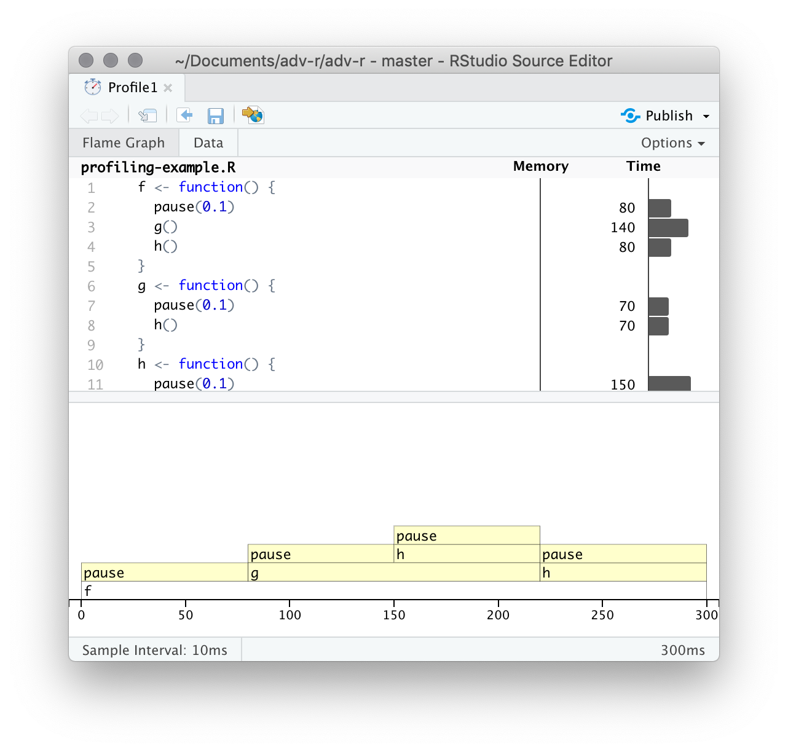
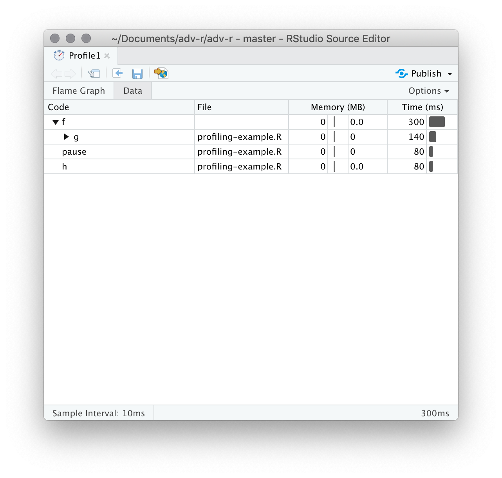
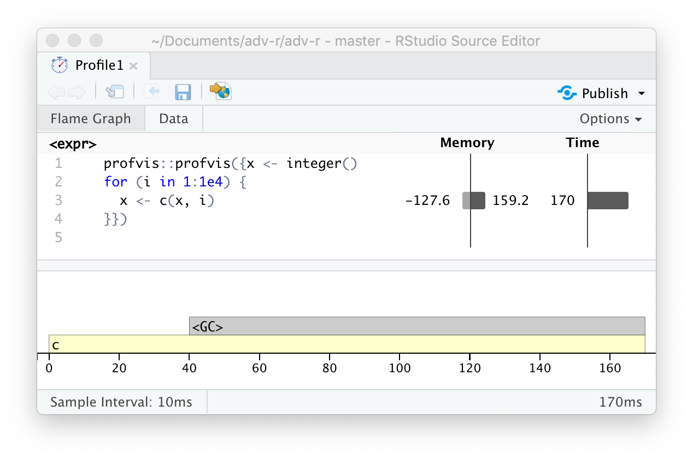

23 Measuring performance
Introduction
Programmers waste enormous amounts of time thinking about, or worrying about, the speed of noncritical parts of their programs, and these attempts at efficiency actually have a strong negative impact when debugging and maintenance are considered.
— Donald Knuth
在你想让代码运行得更快之前，首先需要弄清楚是什么让它变慢。这听起来很简单，但实际上并非如此。即使是有经验的程序员，也很难找出代码中的瓶颈。所以，不要依赖直觉，你应该使用剖析器（profiling）对代码进行性能分析：使用真实的输入来测量每一行代码的运行时间。
一旦你找出了瓶颈，就需要谨慎地尝试各种替代方案，以找到更快且功能相同的代码。在第24章中，你将学到很多加快代码运行速度的方法，但首先你需要学习如何进行微基准测试（microbenchmark），这样才能精确地衡量性能上的差异。
Outline
23.2节：介绍如何使用剖析器来分析导致代码运行慢的原因。
23.3节：如何使用微基准测试来探索可替代方案并找到运行最快的方案。
Prerequisites
使用“profvis”进行性能分析和微基准测试。
Profiling
剖析器是所有编程语言中用来分析代码性能的主要工具。剖析器的种类繁多，R使用一种很简单称为采样（统计）剖析器的工具。它的工作原理是每个几毫秒停止程序执行，记录当前的调用栈，进而统计每个栈消耗的时间。例如下面的f()函数：
使用profvis::pause()而非Sys.sleep()是因为后者不会出现在结果中，R会认为Sys.sleep()不消耗时间。
如果我们剖析f()的运行过程，每隔 0.1s 停止运行，我们会看到：
"pause" "f"
"pause" "g" "f"
"pause" "h" "g" "f"
"pause" "h" "f"每一行代表剖析器的一个 “刻度”（本例中为 0.1s）, 函数调用从右到左记录：第一行显示f()调用pause()。它表示代码运行f()花费了 0.1s，然后运行g()花费了 0.2s，最后运行h()花费了 0.1s。
使用utils::Rprof()可以真实地显示剖析过程，但不太可能得到上面那种清晰地结果：
tmp <- tempfile()
Rprof(tmp, interval = 0.1)
f()
#> NULL
Rprof(NULL)
writeLines(readLines(tmp))
#> sample.interval=100000
#> "pause" "f" "eval" "eval" "withVisible" "withCallingHandlers" "eval" "eval" "with_handlers" "doWithOneRestart" "withOneRestart" "withRestartList" "doWithOneRestart" "withOneRestart" "withRestartList" "withRestarts" "evaluate::evaluate" "evaluate" "in_dir" "in_input_dir" "eng_r" "block_exec" "call_block" "process_group" "withCallingHandlers" "xfun:::handle_error" "process_file" "knitr::knit" "rmarkdown::render" "execute" ".main"
#> "pause" "g" "f" "eval" "eval" "withVisible" "withCallingHandlers" "eval" "eval" "with_handlers" "doWithOneRestart" "withOneRestart" "withRestartList" "doWithOneRestart" "withOneRestart" "withRestartList" "withRestarts" "evaluate::evaluate" "evaluate" "in_dir" "in_input_dir" "eng_r" "block_exec" "call_block" "process_group" "withCallingHandlers" "xfun:::handle_error" "process_file" "knitr::knit" "rmarkdown::render" "execute" ".main"
#> "pause" "h" "g" "f" "eval" "eval" "withVisible" "withCallingHandlers" "eval" "eval" "with_handlers" "doWithOneRestart" "withOneRestart" "withRestartList" "doWithOneRestart" "withOneRestart" "withRestartList" "withRestarts" "evaluate::evaluate" "evaluate" "in_dir" "in_input_dir" "eng_r" "block_exec" "call_block" "process_group" "withCallingHandlers" "xfun:::handle_error" "process_file" "knitr::knit" "rmarkdown::render" "execute" ".main"
#> "pause" "h" "f" "eval" "eval" "withVisible" "withCallingHandlers" "eval" "eval" "with_handlers" "doWithOneRestart" "withOneRestart" "withRestartList" "doWithOneRestart" "withOneRestart" "withRestartList" "withRestarts" "evaluate::evaluate" "evaluate" "in_dir" "in_input_dir" "eng_r" "block_exec" "call_block" "process_group" "withCallingHandlers" "xfun:::handle_error" "process_file" "knitr::knit" "rmarkdown::render" "execute" ".main"这是因为所有剖析器都必须在准确性和性能之间做出基本的权衡。使用采样剖析器时，这种权衡对性能的影响微乎其微，但本质上是随机的，因为计时器的准确性和每次操作所花费的时间都存在一定的变异性。这意味着每次进行性能分析时，你得到的答案都会略有不同。幸运的是，变异性影响对多的是那些运行时间很短的函数，而这些函数也是最不受关注的。
Visualising profiles
剖析器的默认时间间隔很小，即使你得函数会运行几秒钟也会被采样几百次，这导致你无法在终端清晰的看到剖析结果。除了使用utils::Rprof()来捕获剖析结果，也可以使用“profvis”提供的可视化功能。“profvis”还将性能分析数据与底层源代码联系起来，让开发者能直观地看到源代码中哪些具体的行或函数是性能瓶颈（比如某行代码运行时间过长、内存分配过多），从而更轻松地在脑海中构建出代码性能问题的清晰图景。如果“profvis”无法帮到你，你也可以尝试utils::summaryRprof()或“proftools”包。
有两种使用“profvis”的方式：
使用Rstudio的“Profile”菜单。
-
使用
profvis::profvis()。推荐保存代码到单独的文件中，然后source()它，最后在剖析。这样可以保证性能分析数据与源代码联系的更准确。在剖析结束后，“profvis”会生成可交互的网页来探索结果。界面如下：

顶栏显示源码，并且在侧边有对应的内存和时间消耗信息。这些信息可以让你对瓶颈有一个整体的感觉，但并不总是能帮助你准确地识别原因。例如，你可以看到h()消耗了150ms，是g()的两倍；但这并不是因函数h()更慢，而是因为它被调用的频率是g()的两倍。
底栏展示全部调用栈的火焰图（Flame Graph），显示了每个函数的完整调用序列。从这里也可以看到，h()被调用了两次。将鼠标悬停在某个调用栈上，可以获取更多信息。

你也可以使用顶栏的“data tab”信息，可以交互地查看每个节点的性能信息。这基本上与火焰图的显示方式相同（旋转90度）, 但当你有非常大或深度嵌套的调用栈时，它更有用，因为你可以选择交互式地缩放仅选定的组件。

Memory profiling
火焰图中有一个与源代码不匹配的特殊条目——<GC>，表示垃圾收集器gc()正在运行。如果<GC>消耗大量时间，通常表示代码创建了大量临时对象。例如：
如果剖析上面的代码，你会发现垃圾收集器占用了大量时间。

当你在自己的代码中看到垃圾回收器占用大量时间时，可以通过查看顶栏内存消耗信息来找出问题的根源：右侧的柱子表示被分配的内存，左侧的柱子表示被释放的内存。上面代码出现这种问题的根源是“修改后复制”机制（2.3节）: 循环的每次迭代都会创建x的另一个副本。在24.6节中，将介绍解决这种类型问题的策略。
Limitations
采样剖析器仍然有一些缺点：
剖析器对C/C++语言无效。你可以检查R代码是否调用了C/C++代码，但无法检查C/C++代码中调用了哪些函数。用于分析编译代码的工具超出了本书的范围；请从 https://github.com/r-prof/jointprof 开始。
如果你正在使用匿名函数进行大量的函数式编程，可能很难准确地判断调用的是哪个函数。解决这个问题最简单的方法就是给你的函数命名。
-
惰性评估意味着参数通常在另一个函数中进行评估，这使得调用栈更加复杂（见7.5.2节）。不幸的是，R的性能分析器没有存储足够的信息来解开惰性评估，因此在以下代码中，性能分析会使
i()看起来像是由j()调用的，因为参数在被j()需要之前不会被评估。i <- function() { pause(0.1) 10 } j <- function(x) { x + 10 } j(i())
Microbenchmarking
某段代码的运行耗时可能只有几毫秒，几微秒，甚至几纳秒，微基准测试（microbenchmark）可以用来测量这些代码的性能，进而进行对比。但一定要警惕将微基准测试的结果推广到实际代码中：微基准测试中观察到的差异在实际代码中通常会被更高阶的效应所主导；就像在烘焙时，对亚原子物理学的深入理解并没有太大帮助一样。
“bench”包提供了很好的用来进行微基准测试的工具。“bench”包采用了更精准的计时器，能够尽可能地对比那些耗时极少的操作。例如，对比两种不同开方函数的性能：
bench::mark()默认会将所有方法都至少运行一次（min_iterations = 1），并且最多花费0.5s（min_time = 0.5）。它会检查每次运行返回的值是否相同，如果你想测试返回不同值的速度，可以设置check = FALSE。
bench::mark() results
bench::mark()会将结果返回为一个tibble，每行是一个表达式，每列是一个测量结果。
-
min，mean，median，max，itr/sec估计出运行时间的分布。通常，关注运行时间的最小值和中值，因为运行时间往往右偏。例如上面的lb结果显示：sqrt()方法要更优：plot(lb) #> Error: object 'lb' not found men_alloc表示第一次运行时的内存占用。n_gc()表示垃圾回收的次数。n_itr和total_time表示整个测试过程的运行次数和运行总时间。result，memory，time，gc列表列（list-column），储存了原始的运行结果。
因为结果是tibble格式，你可以使用[提取列：
lb[c("expression", "min", "median", "itr/sec", "n_gc")]
#> Error: object 'lb' not foundInterpreting results
一定要注意基准测试结果中的单位。因为单位才是实际中我们关注的内容，例如上例中的结果，运行100次后总共的耗时也是毫秒级别，即使二者有显著差异，但实际体验中并不会造成影响。